<header class="header-fixed">
	<div class="header-limiter">
	 <span class="toggle-btn" style="float:left; padding:6px; padding-right:16px;" (click)="toogleSideBar()"  > 
		<mat-icon *ngIf="!toogle; else close" style="cursor:pointer">reorder</mat-icon> 
	 </span>
		  <a href="#"> </a>
	</div>
	<ng-template #close>
  <mat-icon style="cursor:pointer">close</mat-icon> 
</ng-template>
</header>

<!-- to prevent the content of the page from jumping up -->
<div class="header-fixed-placeholder"></div>
<div id="sidebar" [class.active]="toogle"> 
  <div class="list">
    <!-- navigation bar options -->
    <div class="item"  [routerLink]="['/main-gui']" >- Home</div>
    <div class="item" (click)="toogleSideBar()" [routerLink]="['/first-gui']" >- VIEW PREMIER LEAGUE TABLE</div>
    <div class="item" (click)="toogleSideBar()"[routerLink]="['/second-gui']">- PLAY A RANDOM MATCH</div>
    <div class="item" (click)="toogleSideBar()" [routerLink]="['/third-gui']">- SEARCH MATCHES PLAYED BY DATE</div>
    <div class="item" (click)="toogleSideBar()" [routerLink]="['/fourth-gui']">- VIEW AND SORT MATCHES PLAYED BY DATE</div>
  </div>
</div>
<div class="place">
<router-outlet></router-outlet>
</div>


